Chef
Chef para restaurantes
- Dirección y liderazgo de la cocina de su restaurante
- Creación y renovación de cartas de temporada
- Gestión de equipo, stock y control del desperdicio
Chef · Alto Alentejo
Bruno Miguel Vieira Leal — Chef, Chef Consultor y Cocinero
Concepto, cartas, fichas técnicas y equipo para restaurantes, cafés y eventos en el Alto Alentejo y en Badajoz — pensados para el servicio de cada día, no solo para el día de la apertura.
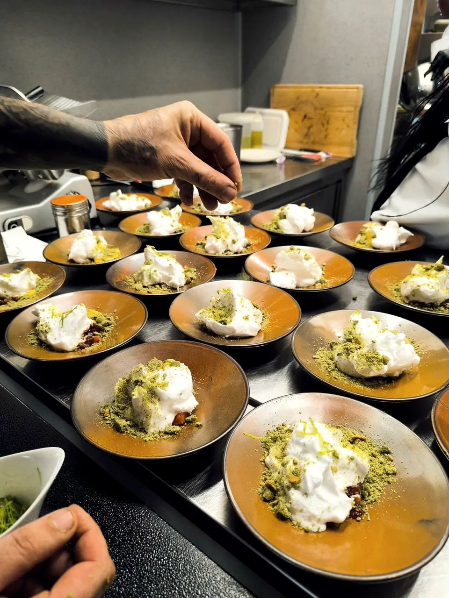
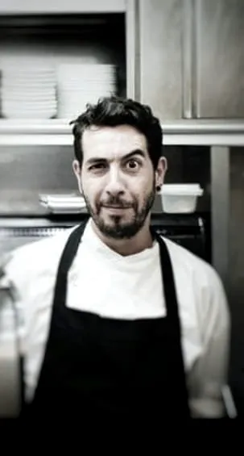
Sobre mí
Más de 15 años de experiencia en cocina profesional — desde la frontera con España hasta Lisboa (Sea Me, Valverde Boutique Hotel) — hasta liderar cocinas en el Alto Alentejo, incluido el Raya Restaurante (Grupo Terramay), en la Playa Fluvial de Azenhas del Rey, y por último, el Massa Fina, del Grupo Vila Galé, en Elvas.
Hoy trabajo junto a propietarios de restaurantes, cafés y organizadores de eventos: desarrollo de concepto, creación de cartas y fichas técnicas, gestión de costes e implementación de operaciones de cocina.
Lo que me distingue: el rigor técnico de cocinas de alto nivel aplicado a la identidad y a los productos del Alentejo — no un concepto genérico importado, sino algo que nace del territorio.
Ese conocimiento está disponible de varias formas: como chef de su restaurante, como chef privado en su mesa, como chef consultor de su negocio, o como cocinero profesional reforzando su cocina.
Ver servicios y precios →Servicios y Precios
Chef para su restaurante, chef privado en su mesa, chef consultor para su negocio, o cocinero profesional para su equipo.
Chef para restaurantes
Cena de autor en casa o espacio propio
Desarrollo de su negocio gastronómico
Refuerzo profesional para su cocina
Valores de referencia, calculados por servicio/evento y sujetos a confirmación — eventos, catering y proyectos mayores tienen presupuesto propio.
Por el formulario o por WhatsApp. Respondo en un máximo de 48h laborables.
Acordamos objetivos, alcance y plazos, y el precio final queda acordado antes de empezar.
Trabajo con usted y con su equipo hasta que la cocina funcione como acordamos.
Casos de Éxito
Proyectos reales, desarrollados en el Alentejo.
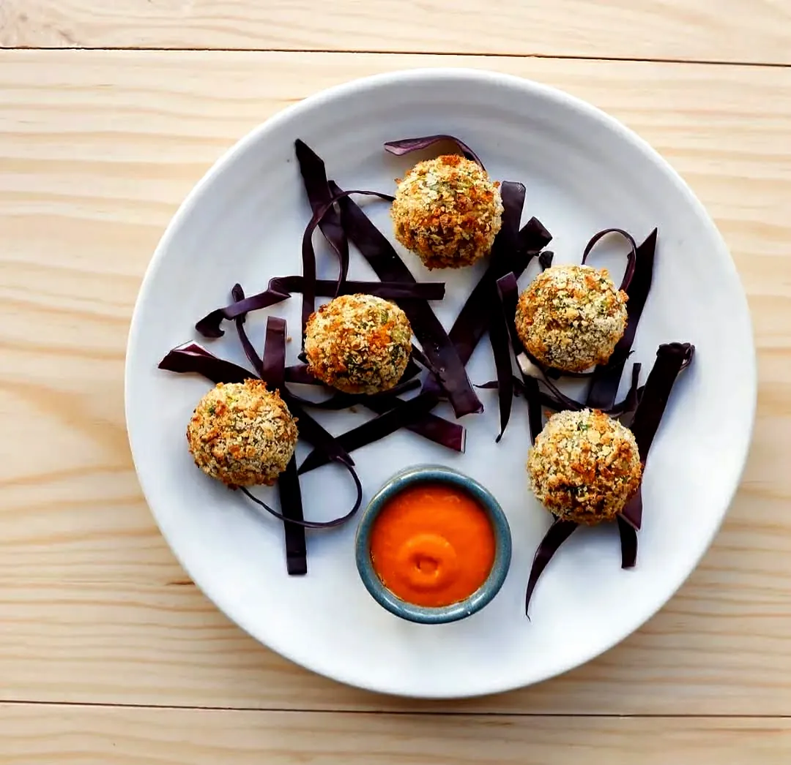
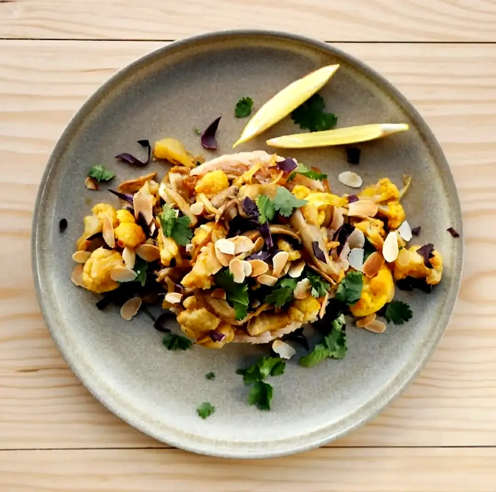
Évora
Contexto: cocina vegetariana mediterránea en Évora, de mesas comunitarias, con carta de ingredientes de temporada y vinos naturales y cócteles de autor.
Qué hice: consultoría de concepto y carta vegetariana mediterránea, incluidos platos de autor como las Bolas de Arroz y Verduras con Salsa de Pimiento Rojo y la Coliflor y Setas con Arroz Jazmín y Almendra.
Resultado: concepto y carta entregados, actualmente en funcionamiento en el restaurante de Évora.
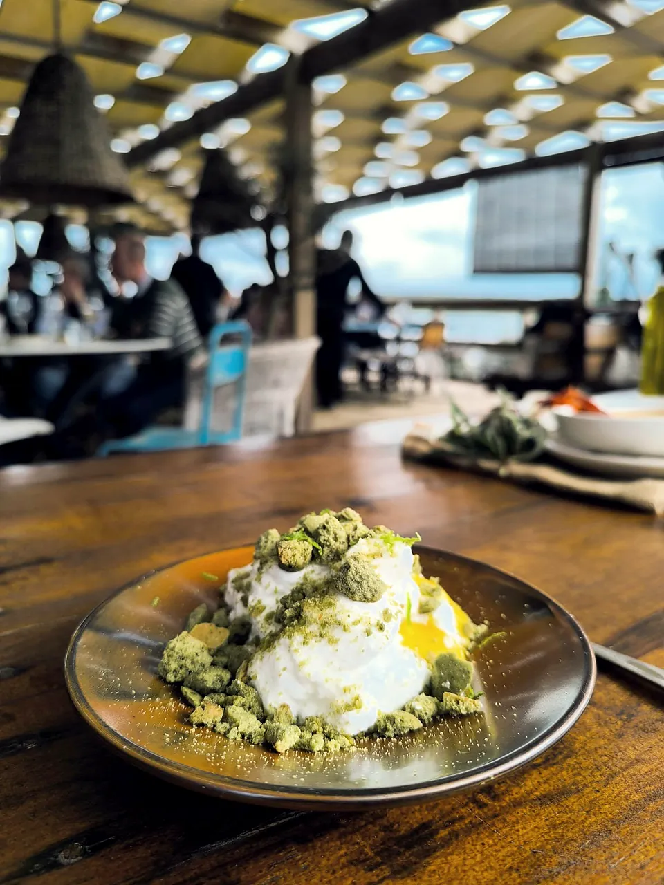
Playa Fluvial de Azenhas del Rey, Alandroal
Contexto: restaurante "farm to beach" del Grupo Terramay (parte del Top 50 Farmers — 2025 Cohort), con un concepto basado en agricultura regenerativa y producto de temporada de su propia granja.
Qué hice: liderazgo del equipo de cocina, reestructuración de cartas de temporada e implementación de un sistema de control de stock.
Resultado: -10% de desperdicio mediante formación de equipo, -15% con el nuevo sistema de stock, y aumento de las ventas de platos premium.
Trayectoria Profesional
Badajoz, España
Primeros pasos en cocina profesional, ya en la frontera con España — mise en place, elaboración de platos y gestión de pedidos.
Lisboa
Sea Me – Peixaria Moderna, con locales en Chiado, Time Out Market y Alvalade. Responsabilidades de sous chef de partida en elaboración a la carta.
Lisboa
Hotel boutique en un palacete histórico, miembro de Relais & Châteaux, galardonado en los World Travel Awards como "Europe's Leading Luxury Boutique Hotel" seis años seguidos (2020–2025). En mi etapa: show cooking para buffet y a la carta, con técnicas de sous vide y cocina molecular.
Lisboa
Sous Chef con liderazgo de un equipo de 5 personas, -7% de desperdicio mediante formación, y reestructuración de cartas de temporada dando valor a productores y producto local.
Elvas
Participación activa en la apertura del establecimiento. Mise en place y show cooking de buffet para hasta 120 clientes.
Juromenha, Alandroal
Chef responsable de la supervisión diaria para 48 clientes y formación de equipo en mise en place y seguridad alimentaria.
Playa Fluvial de Azenhas del Rey, Alandroal
Concepto farm-to-table con aprovechamiento de agricultura regenerativa. Liderazgo de un equipo de 4 personas, con -10% de desperdicio mediante formación; reestructuración de cartas de temporada que aumentó las ventas de platos premium; sistema de control de stock que redujo el desperdicio en un 15%.
🏅 Terramay forma parte del Top 50 Farmers — 2025 Cohort, un reconocimiento a la agricultura regenerativa detrás del concepto.
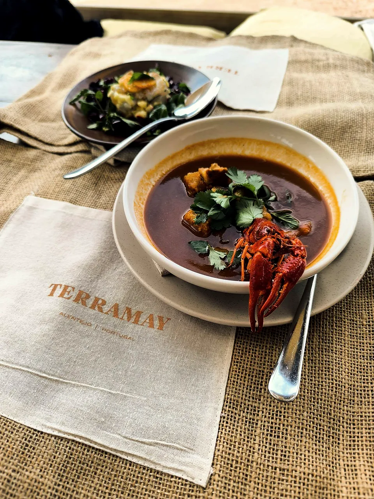
Elvas · actual
Chef de concepto de cocina italiana. Liderazgo de equipo, gestión de eventos y sistema de control de stock.
Galería
Platos, equipos y espacios de algunos de los proyectos por los que he pasado.
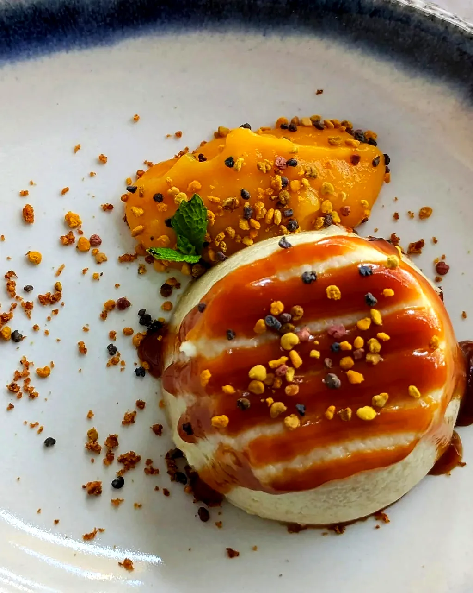
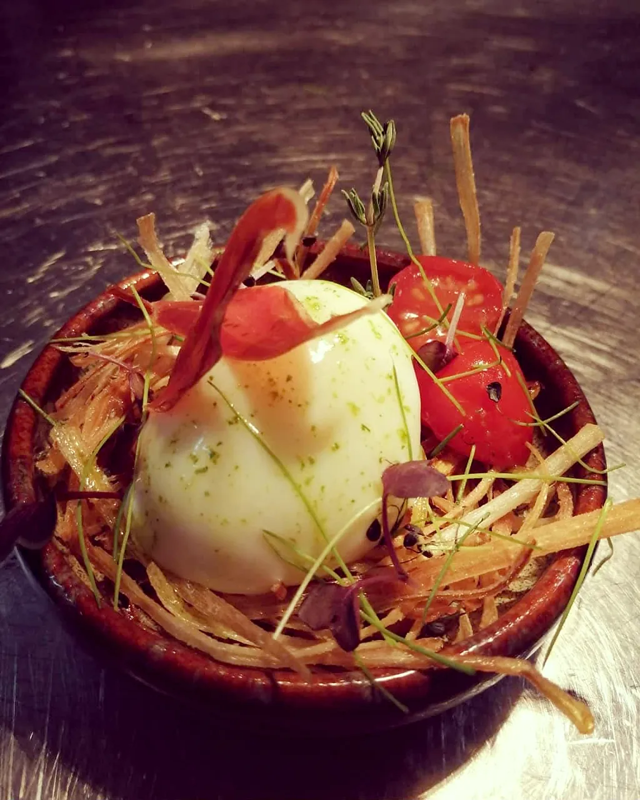
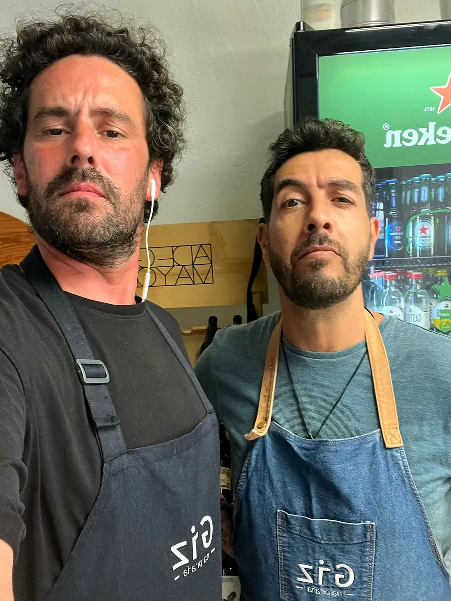
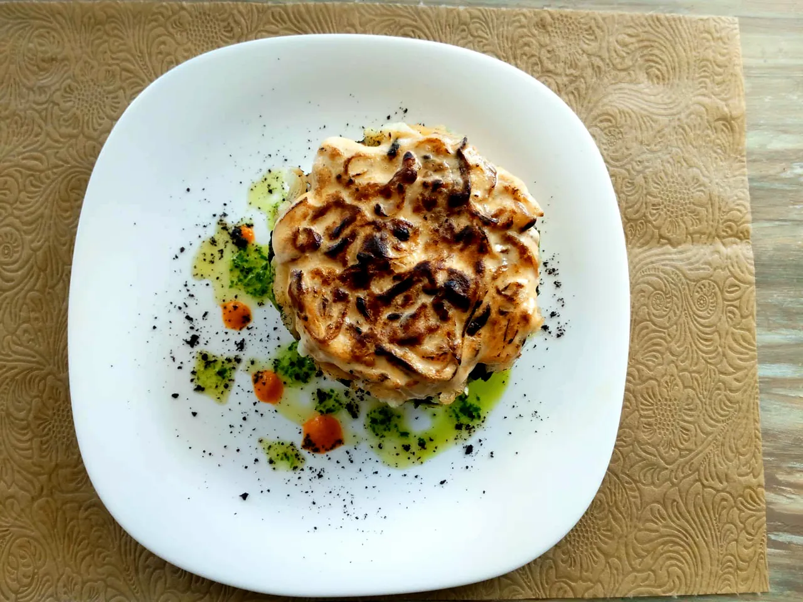
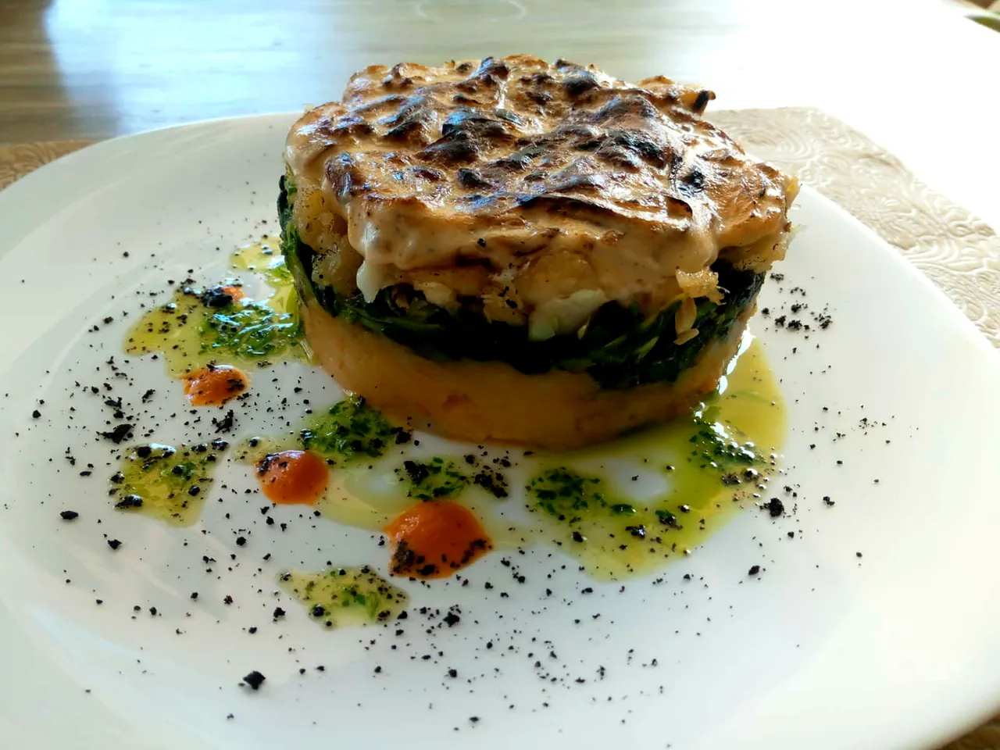
Preguntas frecuentes
Los valores de referencia están en la sección Servicios y Precios. El precio final depende del alcance, la duración y el lugar, y lo acordamos antes de empezar.
Elvas, Campo Maior, Alto Alentejo y Badajoz. Para otras zonas, hable conmigo y vemos qué es posible.
Sí. Puede contactarme, recibir la propuesta y trabajar conmigo en portugués o en español.
El chef dirige la cocina de su restaurante (equipo, cartas, stock). El chef consultor desarrolla el concepto, las cartas, las fichas técnicas y la apertura, y deja el sistema funcionando. El cocinero refuerza su equipo en picos de servicio o sustituciones. El chef privado cocina para su grupo, en su casa.
Menú degustación personalizado, compra, elaboración y servicio de mesa, para grupos de 6 o más personas. Indíquemelo en la solicitud si hay alergias o restricciones alimentarias, para adaptar el menú.
Depende del proyecto: desde el concepto y la carta, pasando por las fichas técnicas y el control de costes, hasta el acompañamiento de la apertura. En la propuesta indico lo que está incluido.
Respondo en un máximo de 48 horas laborables, por WhatsApp, email o teléfono.
Contacto
Respuesta en un máximo de 48h laborables. También atiendo a clientes de Badajoz y de la raya española.